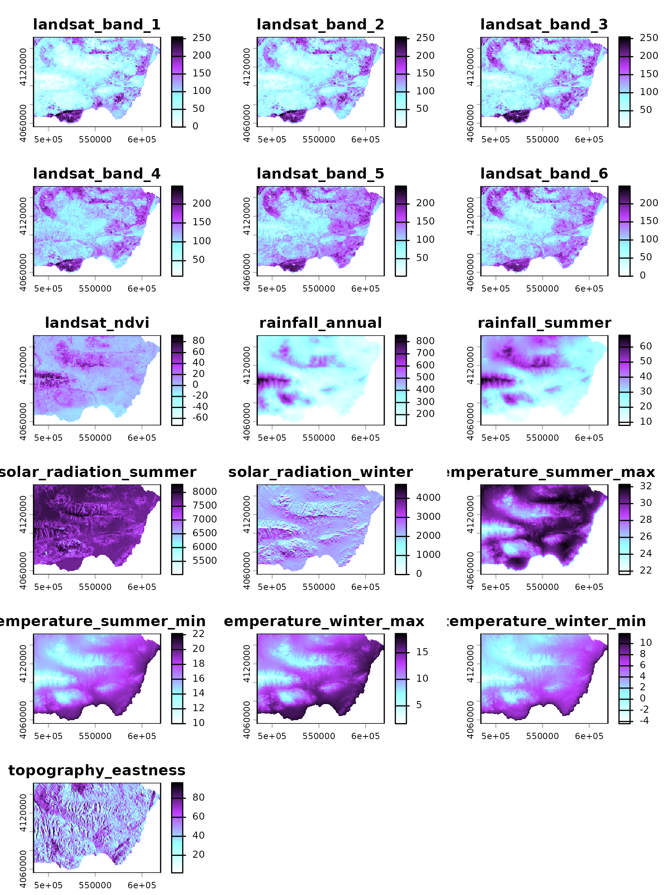

Overview
The linaria dataset is an sf data frame
containing presence records of Linaria
nigricans and greenhouses in eastern Andalusia (Spain). The
plant’s habitat is threatened by the expansion of greenhouses in the
region. The dataset also includes 21 environmental predictors and a
companion raster data at 400m resolution. linaria is well
suited for binary classification, multi-response SDMs, and habitat
suitability analysis.
Setup
library(dplyr)
library(sf)
library(mapview)
library(terra)
library(maxnet)
library(spatialData)
data(
linaria,
linaria_responses,
linaria_predictors,
package = "spatialData"
)
linaria_color <- "#BF3EFF"
linaria_colors <- grDevices::colorRampPalette(
colors = c(
"white",
linaria_color,
"black"
)
)
greenhouses_color <- "#97FFFF"
greenhouses_colors <- grDevices::colorRampPalette(
colors = c(
"white",
greenhouses_color,
"black"
)
)
env_colors <- colorRampPalette(
colors = c(
"white",
greenhouses_color,
linaria_color,
"black"
)
)Data Structure
The dataset is an sf data frame with 7386 rows and 25
columns.
linaria |>
head() |>
dplyr::glimpse()
#> Rows: 6
#> Columns: 25
#> $ linaria_nigricans <int> 0, 0, 0, 0, 0, 0
#> $ greenhouses <int> 1, 1, 1, 1, 1, 1
#> $ landsat_band_1 <dbl> 122.7361, 131.2058, 128.7693, 117.9134, 142.323…
#> $ landsat_band_2 <dbl> 130.0865, 135.1374, 140.4587, 134.2562, 150.022…
#> $ landsat_band_3 <dbl> 135.6665, 138.6600, 151.1233, 147.9056, 156.029…
#> $ landsat_band_4 <dbl> 137.6705, 137.5793, 151.2897, 152.9075, 149.124…
#> $ landsat_band_5 <dbl> 131.5883, 129.5752, 147.2640, 145.7692, 142.580…
#> $ landsat_band_6 <dbl> 128.0193, 129.3456, 143.0903, 141.3965, 138.157…
#> $ landsat_ndvi <dbl> 0.8935745, -0.2097327, 0.1698296, 2.1492300, -2…
#> $ rainfall_annual <dbl> 175.6193, 171.8265, 178.8755, 168.6590, 185.399…
#> $ rainfall_summer <dbl> 25.35585, 24.33438, 26.01632, 22.72672, 26.7352…
#> $ solar_radiation_summer <dbl> 7769.863, 7764.699, 7767.185, 7754.883, 7768.42…
#> $ solar_radiation_winter <dbl> 2414.235, 2398.743, 2409.010, 2391.854, 2436.68…
#> $ temperature_summer_max <dbl> 31.19968, 31.27113, 31.29720, 31.31935, 31.3081…
#> $ temperature_summer_min <dbl> 17.88333, 17.97116, 17.92983, 18.10378, 17.9232…
#> $ temperature_winter_max <dbl> 14.32534, 14.44624, 14.40007, 14.62476, 14.3911…
#> $ temperature_winter_min <dbl> 5.040048, 5.155740, 5.103079, 5.360068, 5.15614…
#> $ topography_eastness <dbl> 33.27220, 33.43419, 33.64509, 44.18529, 41.8191…
#> $ topography_elevation <dbl> 457.2828, 432.8701, 441.4741, 398.9463, 442.908…
#> $ topography_northness <dbl> 17.243651, 16.443365, 15.332311, 13.336531, 7.8…
#> $ topography_position <dbl> 0.5508171, 0.8273488, -4.5827132, -0.4132942, 2…
#> $ topography_slope <dbl> 2.989993, 2.701621, 2.819398, 2.356359, 2.77472…
#> $ x <dbl> 597188.7, 597508.7, 596268.7, 598608.7, 595028.…
#> $ y <dbl> 4147393, 4146933, 4146733, 4146353, 4146013, 41…
#> $ geometry <POINT [m]> POINT (597188.7 4147393), POINT (597508.7 41469…It has two binary response variables (see
linaria_responses):
linaria_responses
#> [1] "linaria_nigricans" "greenhouses"Both response variables encode binary outcomes: 1 for confirmed presence, 0 for all other record types.
The map below shows all three record types by colour.
mapview::mapview(
linaria |>
dplyr::filter(
linaria_nigricans == 1
),
layer.name = "Linaria nigricans",
col.regions = linaria_color
) +
mapview::mapview(
linaria |>
dplyr::filter(
greenhouses == 1
),
layer.name = "Greenhouses",
col.regions = greenhouses_color
)The dataset includes 20 remote sensing, topographic, and climate predictors.
linaria_predictors
#> [1] "landsat_band_1" "landsat_band_2" "landsat_band_3"
#> [4] "landsat_band_4" "landsat_band_5" "landsat_band_6"
#> [7] "landsat_ndvi" "rainfall_annual" "rainfall_summer"
#> [10] "solar_radiation_summer" "solar_radiation_winter" "temperature_summer_max"
#> [13] "temperature_summer_min" "temperature_winter_max" "temperature_winter_min"
#> [16] "topography_eastness" "topography_elevation" "topography_northness"
#> [19] "topography_position" "topography_slope"These variables are available as a raster file at 400 m resolution
(EPSG:25830), which is loaded with linaria_extra().
linaria_env <- spatialData::linaria_extra()
plot(
x = linaria_env,
nc = 3,
col = env_colors(n = 100)
)
Example Usage
Greenhouse agriculture expands over the habitat of Linaria
nigricans in eastern Andalusia. Here we assess potential impacts of
such expansion on the plant populations by training two separate habitat
suitability models using maxnet,
one for L. nigricans and one for greenhouses, predicting them
across the study region, and combining them into a relative risk
surface.
Model Training and Prediction
The code below applies the R version of the popular MaxEnt software to model the distribution of Linaria nigricans and greenhouses against background data representing the full environmental backdrop of the study region.
linaria_training <- sf::st_drop_geometry(linaria)
linaria_model <- maxnet::maxnet(
p = linaria_training[["linaria_nigricans"]],
data = linaria_training[, linaria_predictors],
addsamplestobackground = TRUE #default
)
greenhouses_model <- maxnet::maxnet(
p = linaria_training[["greenhouses"]],
data = linaria_training[, linaria_predictors]
)We project each model onto the environmental raster using
terra::predict() with type = "cloglog", which
returns values bounded between 0 and 1 that can be interpreted as
occurrence probability.
linaria_prediction <- terra::predict(
object = linaria_env,
model = linaria_model,
type = "cloglog",
na.rm = TRUE
)
names(linaria_prediction) <- "linaria"
greenhouses_prediction <- terra::predict(
object = linaria_env,
model = greenhouses_model,
type = "cloglog",
na.rm = TRUE
)
names(greenhouses_prediction) <- "greenhouses"
mapview::mapview(
x = linaria_prediction,
col.regions = linaria_colors(n = 5),
layer.name = "Linaria suitability",
na.color = "transparent"
) +
mapview(
linaria |>
dplyr::filter(
linaria_nigricans == 1
),
color = "gray60",
layer.name = "Linaria presence",
alpha.regions = 0
)
#> Registered S3 method overwritten by 'stars':
#> method from
#> st_interpolate_aw.stars sfHabitat-Loss Risk
We can use these models to obtain a proxy of habitat-destruction risk
for the populations Linaria nigricans we know about (presence
records) and the ones we don’t (high suitability regions in
linaria_prediction).
Let’s start with the ones we know about.
Below we extract the greenhouse suitability scores for all presences of Linaria nigricans.
risk_sf <- terra::extract(
x = greenhouses_prediction,
y = linaria |>
dplyr::filter(
linaria_nigricans == 1
) |>
dplyr::select(
geometry
),
bind = TRUE
) |>
sf::st_as_sf()
dplyr::glimpse(risk_sf)
#> Rows: 209
#> Columns: 2
#> $ greenhouses <dbl> 0.094204252, 0.157519979, 0.307384756, 0.051035694, 0.2077…
#> $ geometry <POINT [m]> POINT (616678.7 4134262), POINT (616438.7 4133822), …The map below uses the output of terra::extract() to
highlight the known populations at a higher risk by color and size.
mapview::mapview(
risk_sf,
zcol = "greenhouses",
layer.name = "Risk",
cex = "greenhouses",
col.regions = greenhouses_colors(n = 5),
map.types = c("Esri.WorldImagery")
)Take in mind that the training data represents the 2010’s, while the background satellite image is much more recent.
We need to follow several steps to assess potential risks at unknown populations:
- Identify the cell IDs of the known populations.
- Convert the linaria and greenhouse predictions to a data frame with cell IDs.
- Remove the cell IDs of the known populations.
#create buffer of 500m around presences
linaria_presence_buffer <- terra::buffer(
x = linaria |>
dplyr::filter(
linaria_nigricans == 1
) |>
terra::vect(),
width = 500
)
#extract cell IDs inside the buffer
linaria_presence_cells <- terra::extract(
x = linaria_prediction,
y = linaria_presence_buffer,
cells = TRUE,
ID = FALSE,
na.rm = TRUE
) |>
na.omit()
dplyr::glimpse(linaria_presence_cells)
#> Rows: 1,012
#> Columns: 2
#> $ linaria <dbl> 1.513157e-01, 3.254025e-01, 1.926303e-01, 6.604518e-01, 5.5600…
#> $ cell <dbl> 15292, 15293, 15632, 15633, 15631, 15632, 15971, 15972, 16650,…Below we create a data frame with cell IDs and their coordinates, and predicted suitabilities for linaria and greenhouses.
potential_risk <- dplyr::bind_cols(
as.data.frame(
x = linaria_prediction,
cells = TRUE,
xy = TRUE
),
as.data.frame(
x = greenhouses_prediction
)
)
dplyr::glimpse(potential_risk)
#> Rows: 62,542
#> Columns: 5
#> $ cell <dbl> 1, 2, 3, 4, 5, 6, 7, 8, 9, 10, 11, 12, 13, 14, 15, 16, 17,…
#> $ x <dbl> 484177.2, 484577.2, 484977.2, 485377.2, 485777.2, 486177.2…
#> $ y <dbl> 4152125, 4152125, 4152125, 4152125, 4152125, 4152125, 4152…
#> $ linaria <dbl> 1.402545e-12, 1.294853e-12, 7.119942e-10, 3.500466e-07, 2.…
#> $ greenhouses <dbl> 0.002181859, 0.003915068, 0.005478565, 0.004416018, 0.0057…We can now remove the cells belonging to known populations, and filter the data frame to those cases with high sutiability for linaria and greenhouses.
potential_risk <- potential_risk |>
#remove cells with known populations
dplyr::filter(
!cell %in% linaria_presence_cells$cell
) |>
#remove cases with low linaria and greenhouse suitability
dplyr::filter(
linaria > 0.5,
greenhouses > stats::median(greenhouses)
) |>
#to sf
sf::st_as_sf(
coords = c("x", "y"),
crs = sf::st_crs(linaria)
)The resulting map highlights sites with high-suitability for Linaria nigricans that might be at risk due to greenhouse expansion.
mapview::mapview(
potential_risk,
zcol = "greenhouses",
layer.name = "Potential risk",
cex = "greenhouses",
col.regions = greenhouses_colors(n = 5),
map.types = c("Esri.WorldImagery")
) +
mapview::mapview(
linaria |>
dplyr::filter(
linaria_nigricans == 1
),
layer.name = "Known populations",
alpha.regions = 0,
col.regions = "white",
col = "white",
cex = 0.5
)Conclusion
The linaria dataset provides a rich testbed for
multi-response binary classification: one response captures species
habitat suitability, the other captures the spatial footprint of the
main threatening land use. This structure is ideal for comparative SDM
workflows, land-use conflict analyses, or any task requiring
simultaneous modelling of species and threat distributions.
References
Benito, B.M., Martínez-Ortega, M.M., Munoz, L.M., Lorite, J. & Penas, J. (2009). Assessing extinction-risk of endangered plants using species distribution models: a case study of habitat depletion caused by the spread of greenhouses. Biodiversity and Conservation, 18(9), 2509–2520. https://doi.org/10.1007/s10531-009-9604-8
Peñas, J., Benito, B., Lorite, J., et al. (2011). Habitat fragmentation in arid zones: a case study of Linaria nigricans under land use changes (SE Spain). Environmental Management, 48, 168–176. https://doi.org/10.1007/s00267-011-9663-y
Benito, B.P.d., Peñas, J.G.d. (2008). Greenhouses, land use change, and predictive models: MaxEnt and Geomod working together. In: Paegelow, M., Olmedo, M.T.C. (eds) Modelling Environmental Dynamics. Environmental Science and Engineering. Springer, Berlin, Heidelberg. https://doi.org/10.1007/978-3-540-68498-5_11